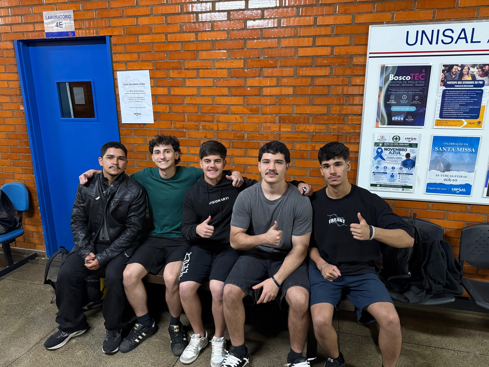

Nossa missão
Oferecer orientação e ferramentas práticas para que qualquer pessoa consiga montar uma rotina de treino e alimentação alinhada ao seu objetivo.

A Heavy Feeder é uma plataforma de treinos, dietas e calculadoras criada por alunos da Unisal para tornar uma rotina saudável mais simples, acessível e adaptada a cada pessoa.
A Heavy Feeder surgiu em 2026 como projeto desenvolvido por estudantes da Unisal – Campus São José. Percebemos que muita gente quer começar a treinar e a se alimentar melhor, mas não sabe por onde começar, ou acaba desistindo por falta de orientação clara.
Nossa resposta foi reunir, em um só lugar, planos de treino por objetivo, orientações de alimentação e calculadoras para acompanhar medidas, macronutrientes e gasto energético. Tudo pensado para quem está dando o primeiro passo e também para quem busca mais constância.

Oferecer orientação e ferramentas práticas para que qualquer pessoa consiga montar uma rotina de treino e alimentação alinhada ao seu objetivo.
Ser uma referência acessível para quem quer evoluir com saúde, incentivando mudanças de hábito que se sustentem no longo prazo.
Equilíbrio, conhecimento e constância. Cada corpo e cada rotina são diferentes, por isso não existe fórmula única para todos.
Somos alunos da Unisal que desenvolveram o projeto do começo ao fim: da ideia ao código.
Função no projeto
Curso, Unisal – Campus São José
Função no projeto
Curso, Unisal – Campus São José
Função no projeto
Curso, Unisal – Campus São José
Função no projeto
Curso, Unisal – Campus São José
Função no projeto
Curso, Unisal – Campus São José
Heavy Feeder: alimente seu potencial, treine seus objetivos.
Começar pelos treinos